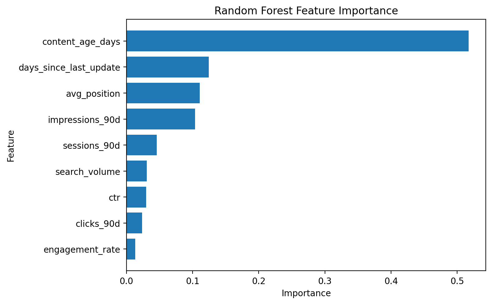

Abstract
Content teams often can't tell which of thousands of aging pages actually need attention, so this project asks whether historical search, traffic, freshness, and engagement signals can rank pages for refresh review. Using an anonymized, roughly 30,000-row dataset of FlyRank search-intelligence signals, a Random Forest Regressor was trained to reproduce a transparent rule-based refresh-opportunity baseline, then validated first on a random 80/20 split and again on a stricter split grouped by client. Under the honest, client-grouped validation, R² fell from 0.645 to 0.558 and MAE rose from 0.057 to 0.073 relative to the random split, with content age, recency of update, and search position emerging as the strongest signals. The result is directional evidence — not causal proof — that freshness and visibility signals can support editorial prioritization, and the model's output is a ranked, reason-coded queue rather than an automated verdict. It's built for content teams who want a repeatable, explainable starting point for deciding which pages to review first, not a claim about how Google ranks anything.
1 · Introduction
The problem: too many pages, no shared way to triage them
Picture a content team with a few thousand live pages and one afternoon a week to review candidates for refresh. Some pages are quietly losing impressions, some have gone stale, some just never had good visibility to begin with — and without a shared, explainable way to rank them, review time goes to whichever page someone happens to remember.
This project asks: how can historical search, traffic, freshness, and engagement signals be used to prioritize content pages for potential refresh review? It supports content teams in deciding which pages should receive editorial review first when refresh resources are limited.
The goal is explicitly not to determine which pages will rank higher on Google, and not to claim a causal effect of content updates. It's to build a repeatable, data-informed prioritization approach — the kind a team can rerun every month and trust for the same reasons each time.
2 · Data
An anonymized, content-level signal set
The analysis uses the FlyRank ML Internship dataset for the Refresh / Content Opportunity Scoring lane — an anonymized, content-level table of search, traffic, freshness, and engagement signals. No client names, domains, URLs, titles, or keywords appear anywhere in the workflow.
Signals used
content_age_days,days_since_last_updatesearch_volume,impressions_90d,clicks_90d,sessions_90dctr,avg_position,engagement_rate
Target
The target is the project's own rule-based baseline_score from the Week 4 baseline stage — a weighted combination of content age, days since last update, and negative traffic trend. Using the baseline as the modeling target makes it possible to directly compare the learned model against the transparent rule it's meant to improve on.
Exclusions
Identifier fields — content_id and client_id — were never used as predictive features; client_id appears only as a grouping key for validation. No credentials, private exports, or client-identifying details appear in this workflow.
3 · Methodology
A learned model, checked against a rule and against itself
Baseline
The Week 4 baseline is a transparent, hand-weighted score: 40% content age, 35% days since last update, 25% negative traffic trend. It's the reference every later result is measured against — anyone can read the rule and audit it in one sitting.
Model
A Random Forest Regressor was chosen because it can capture nonlinear relationships and interactions across the nine signals above without requiring feature scaling — a reasonable fit for a mix of count-like, ratio, and duration features.
Validation design
Two validation strategies were run on purpose, not just one:
- Random 80/20 split — the standard first check, but one that lets rows from the same client sit in both train and test.
-
Grouped split by
client_id— the honest check. No client's pages appear in both training and testing, which is a more realistic test of generalizing to a client the model has never seen.
Leakage checks
baseline_score — the target itself — was excluded from the input features, and identifier fields were kept out of the predictive feature set entirely. The analysis does not assume access to future ranking outcomes or private production signals unavailable at scoring time.
4 · Results
The grouped split is the one to trust
The random-split number looks better — but that's exactly why it's checked against the grouped split before being trusted.
| Validation strategy | MAE | RMSE | R² |
|---|---|---|---|
| Random 80/20 split | 0.0569 | 0.0726 | 0.6447 |
| Grouped by client (honest) | 0.0734 | 0.0888 | 0.5579 |
The drop from 0.645 to 0.558 shows the random-split estimate was somewhat optimistic about generalization — a client the model has already partly seen is easier to score than a genuinely new one. That gap is the paper's headline number, not the higher one.
What the model leaned on
The figure below shows the actual feature-importance values produced by the trained Random Forest model. The chart is generated directly from the model's feature_importances_ values for the nine features used during modeling.

Figure: Random Forest feature importance. Higher values indicate that the feature contributed more to the model's internal split-based importance measure.
In this analysis, the feature-importance chart provides a directional view of which signals the Random Forest relied on most when reproducing the rule-based refresh-opportunity score. The relative importance of the features can help explain the model's behavior and identify which signals deserve closer inspection in the content-review workflow.
These importance values describe the model's internal behavior only. They do not mean that a more important feature causes a higher refresh opportunity, improves rankings, increases clicks, or produces any particular business outcome. Feature importance should therefore be interpreted as directional evidence rather than causal evidence.
5 · Limitations & honest framing
What this work cannot claim
- 01 The target is a rule-based score, not a business outcome. The model predicts the project's own baseline refresh-opportunity score, not future clicks, rankings, or conversions. Good predictive performance here doesn't demonstrate that acting on the recommendations improves search performance.
- 02 Validation is not causal evidence. The analysis finds statistical patterns in the available data. It does not establish that freshness, visibility, or engagement cause changes in Google rankings.
- 03 Generalization is weaker than it first looks. Grouped R² (0.558) trails random-split R² (0.645) — a reminder that validation design materially changes the estimated performance.
- 04 Missing business context. The dataset likely omits editorial priorities, business value, seasonal campaigns, content-quality judgment, and strategic importance — all things a human reviewer would weigh.
- 05 Human review is required. This is decision support. No content, SEO, redirect, or publishing decision should be made from the model's output without a human checking it first.
6 · Ranked recommendations
What a content team does with this, Monday morning
The model's output is a ranked content-action queue: every page gets a predicted refresh-opportunity score and a human-readable reason code, so a reviewer can see why a page is ranked where it is, not just that it is.
| Signal / archetype | Recommended action |
|---|---|
| Old content with declining traffic | Refresh content |
| Low CTR with a reasonable ranking | Review title & meta description |
| Poor search position | Review SEO / search visibility |
| Low engagement | Review content quality |
| Stable-performing content | Monitor |
Because content age and recency of update carried the most weight in the model, freshness signals are a reasonable place to start review effort — but that's a directional read from the model, not evidence that updating content will improve rankings.
Every recommendation in the queue is meant to be checked against content accuracy, business importance, search intent, recent manual updates, seasonal effects, marketing campaigns, and current content quality before anyone acts on it. The model doesn't publish, delete, redirect, merge, or modify anything on its own.
7 · Reproducibility
Rerun it yourself
- Full workflow: github.com/MahboobAli1/flyrank-ml-internship
-
Capstone notebook:
work/notebooks/capstone.ipynb— opens directly in Colab from the repo badge -
Data:
the bundled, anonymized
data/raw/content_refresh_anonymized.csv(~30k rows) shipped with the starter repo
To rerun: open the notebook in Colab, Runtime → Run all.
The current notebook doesn't pin a random_state on the
RandomForestRegressor — for exact, bit-for-bit reproducibility across runs, set one (e.g. random_state=42) and note it here.
8 · Acknowledgments & data credit
Data and program credit
This research was completed as part of the FlyRank ML Internship, using FlyRank's anonymized search-intelligence dataset. Thanks to the FlyRank team for the dataset access and the internship's ML curriculum.
Dataset: FlyRank/internship-warehouse on Hugging Face (full ~79M-row release, gated access).